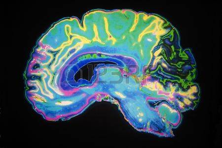

Alzheimer's_disease pictures
senior man in failing health and his worried middle aged son focus on senior man
view from behind of an adult son walking with his senior father in the park
granddaughter helping her disabled grandmother walk with the aid of a walker

artificially coloured mri scan of human brain
puzzled mind and brain teasers symbol featuring a human head with jigsaw puzzle peices
alzheimer s disease dementia senior adult
3d medical background with magnifying glass examining brain depicting alzheimers research
drugs for alzheimers disease